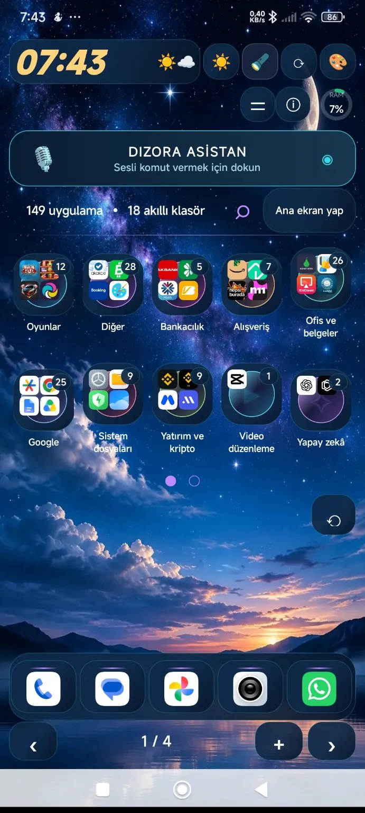
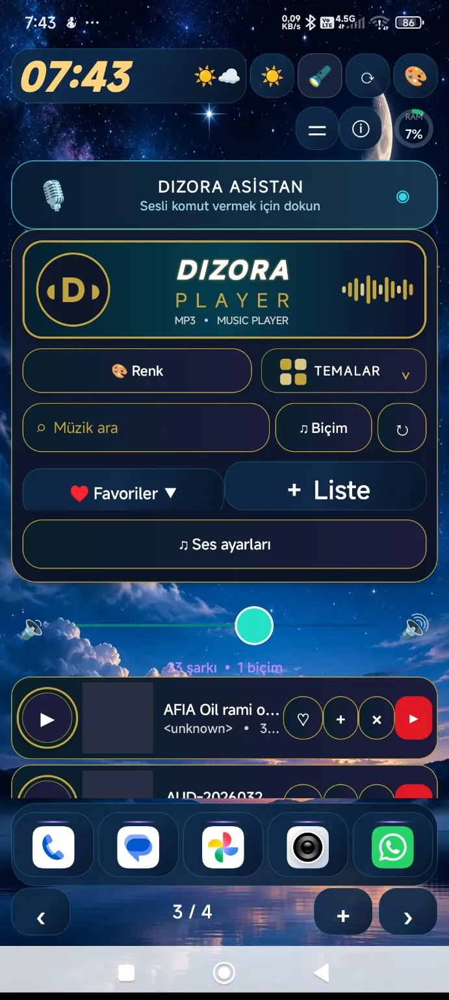
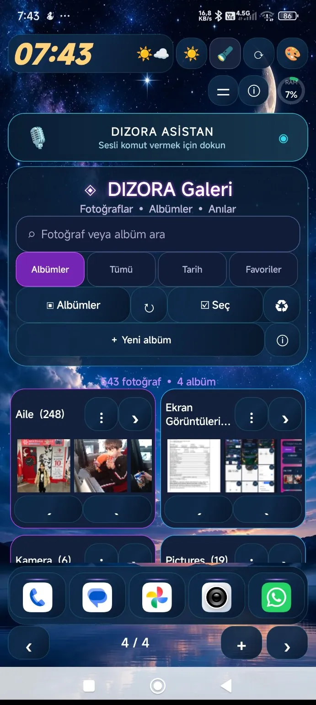
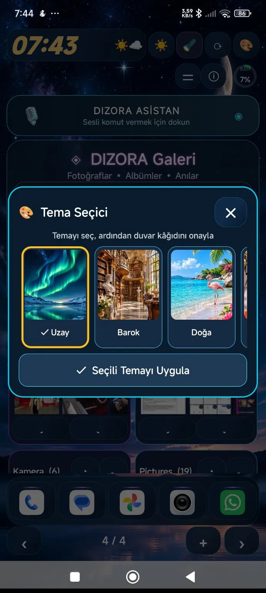
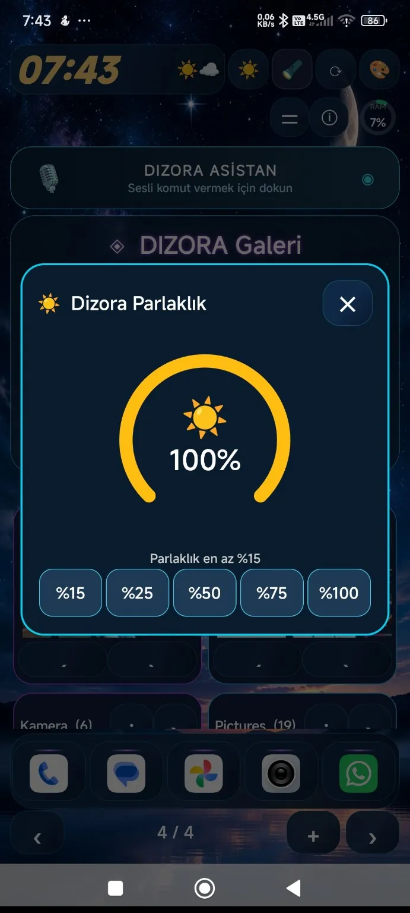

▦
Akıllı klasörlerUygulamalarını kategorilere ayır, sürükleyip düzenle.
Dizora; uygulamalarını akıllı klasörlerde düzenleyen, temalarla kişiselleştirilen ve müzik ile galeri araçlarını bir araya getiren Android ana ekran deneyimidir.
Dizora'yı keşfetÖzelliklere bakUygulamalarını kategorilere ayır, sürükleyip düzenle.
Farklı görünümler ve duvar kâğıtlarıyla ekranını özelleştir.
Yerel müziklerini, listelerini ve oynatımını yönet.
Fotoğraflarını görüntüle, seç ve klasörlerde düzenle.
Akıllı ana ekran, müzik çalar ve kişiselleştirme araçlarından görüntüler.





Uygulamanın yayın hazırlıkları devam ediyor. Mağaza bağlantısı yayın onayından sonra eklenecek.
Veri kullanımı hakkında bilgi için gizlilik sayfasını inceleyebilirsin. İletişim adresi ve resmi destek kanalı yayın öncesinde eklenecek.